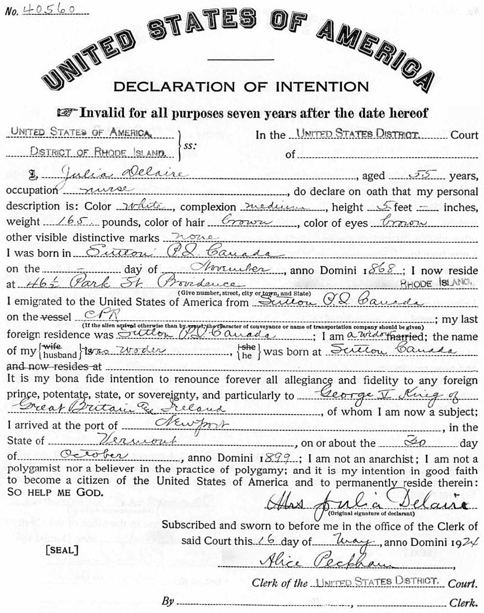

Julia Delaire declares her intention to become a citizen
Rhode Island State and Federal Naturalization Records, 1802-1945; U.S. District Court, Rhode Island, vol. 81-85, declarations 39320-41580, image 687

The original record, as it appears in the register or index.
What this document is
A naturalization paper filed in federal court on the way to American citizenship.
What it says
Declaration of Intention No. 40560. Julia Delaire, aged 55, occupation nurse. White, complexion medium, height 5 feet, weight 165 pounds, brown hair, brown eyes, no other marks. Born Sutton, P.Q., Canada, November 1868. Lives at 46½ Park St., Providence. Emigrated from Sutton, P.Q., by CPR (railway); last foreign residence Sutton. "I am a widow." Husband line reads "was woder"(?), born Sutton, Canada. Arrived at the port of Newport, Vermont, on or about 30 October 1899. Renounces George V, King of Great Britain and Ireland. Signed "Mrs Julia Delaire". Sworn 16 May 1924 before Alice Peckham, Clerk.
Place
U.S. District Court, District of Rhode Island
How it was read
Read from the image